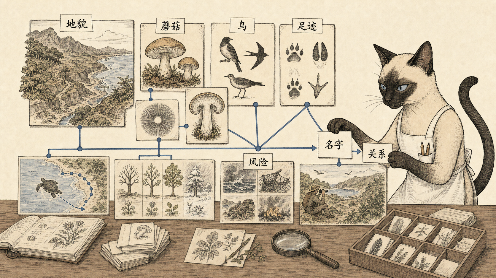
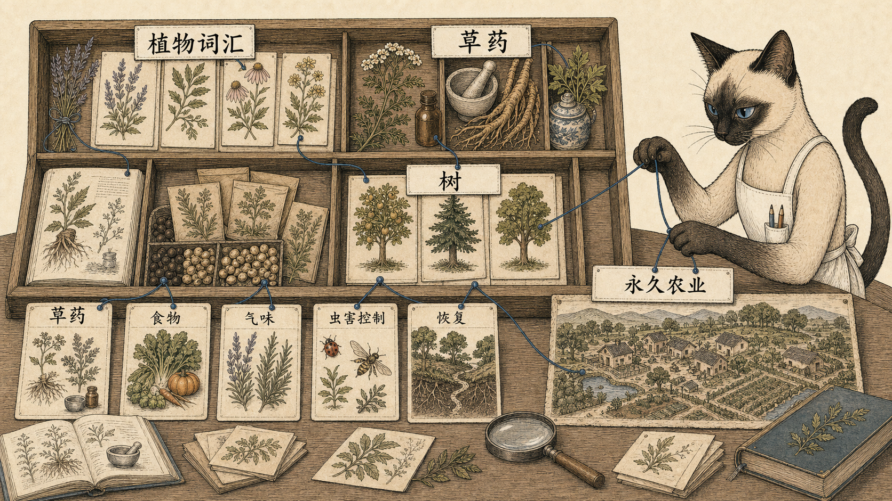
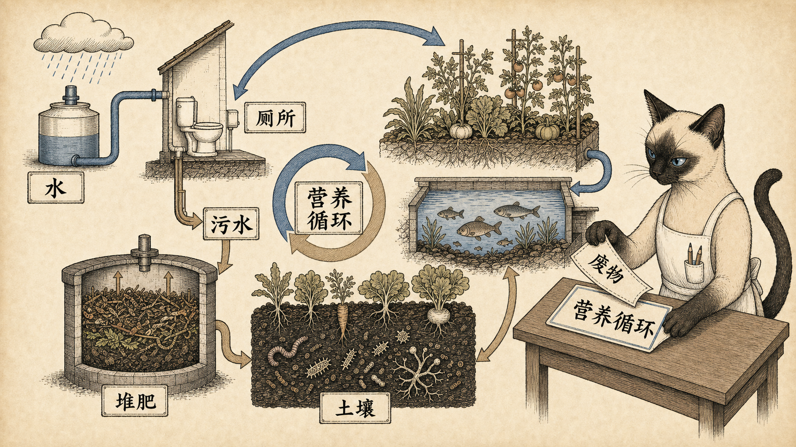
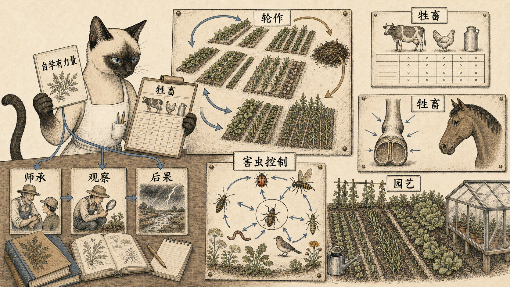

Whole Earth Epilog 1974 / Land Use / 01
先学会识别生命
识别不是收藏名词，而是进入生命关系。
土地使用章不是从开发开始，而是从看见开始。蘑菇要求耐心和风险判断，鸟类指南要服务眼前的观察，足迹让不在场的动物仍能被读出。土地首先是一张活物留下的文本。
地貌蘑菇鸟足迹风险关系
Evidence: leaf 26 / p.473；leaf 28 / p.475；leaf 30-31 / p.477-478。

Whole Earth Epilog 1974 / Land Use / 02
植物、草药和树
植物不是背景装饰，而是药物、气味、食物、恢复和代际农业的入口。
Whole Earth 让读者进入植物词汇，也进入植物的实际用途。草药把烹饪、香味、染料、驱虫和药用连在一起；树则把个人劳动、村庄恢复和长期农业放在一起。
植物词汇草药树恢复永久农业
Evidence: leaf 34 / p.481；leaf 35 / p.482；leaf 36-37 / p.483-484。

Whole Earth Epilog 1974 / Land Use / 03
不要把循环叫废物
粪便、污水和土壤不是单独问题，而是营养循环。
饮用水被拿去冲走肥料，污水被叫作废物，城市再花巨大成本处理污染。Whole Earth 关心的是怎样把水、固体、营养、土壤和食物重新接回循环。
水厕所污水堆肥土壤营养循环
Evidence: leaf 39 / p.486；leaf 40 / p.487。

Whole Earth Epilog 1974 / Land Use / 04
小农和活物边界
自学有力量，但活物要求师承、观察和承担后果。
小农怎样计划轮作，牲畜怎样进入土壤循环，害虫控制怎样从毒杀转向关系修复。书本自学有力量，但活物会让这个边界突然出现。
轮作牲畜师承害虫控制园艺后果
Evidence: leaf 44-46 / p.491-493；leaf 48-50 / p.495-497。